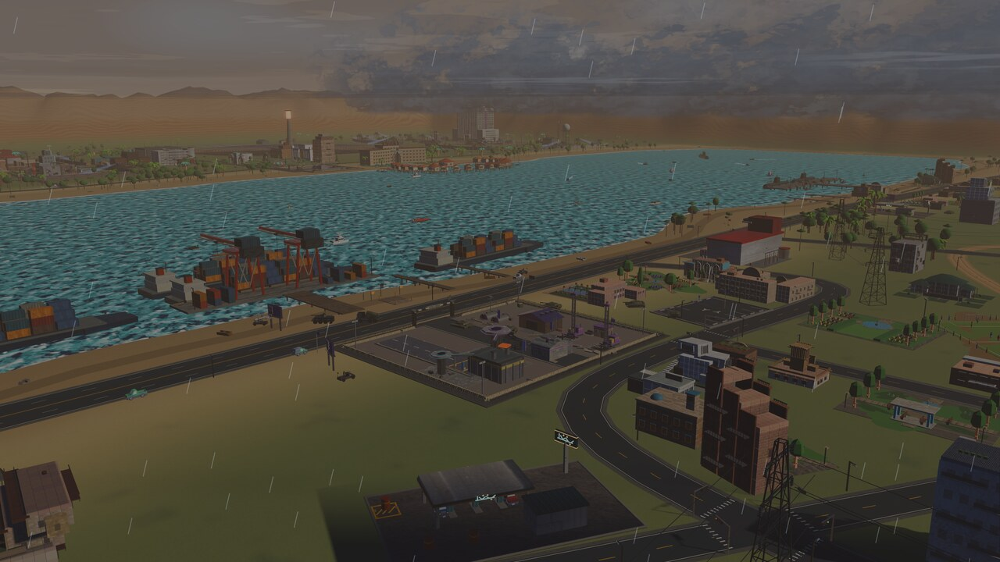
LiberateDeh-e Mahi
The fishing port. Break the garrison and the town raises its own gun and forge.
The strait is closed. Open it.

The actual opening cinematic, captured from the game.
Bandar-e Azadi opens the campaign as a working stronghold, walls manned, forges lit, and losing. The Marshal's Paygah runs at twice your output.
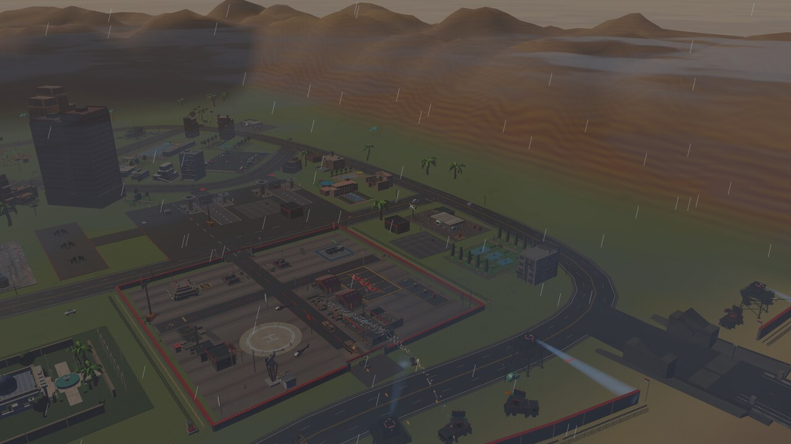
The war quarter runs itself: barracks, motor pool and wall batteries, while you fly. Your crew answers the wire; you answer the war.
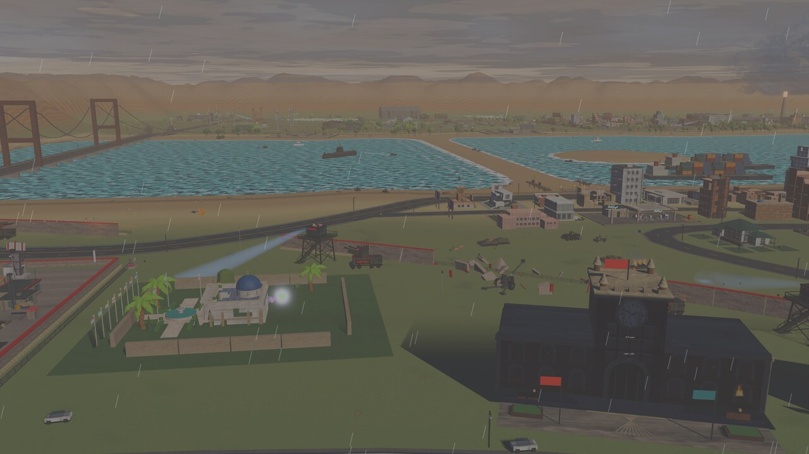
Both shores build from the same doctrine, gun for gun. The only way to out-build Paygah is to liberate the coast: every freed port raises its own gun and forge and joins the network.
Each order is a place, and the strait doesn't open until the last of them is done.

LiberateThe fishing port. Break the garrison and the town raises its own gun and forge.
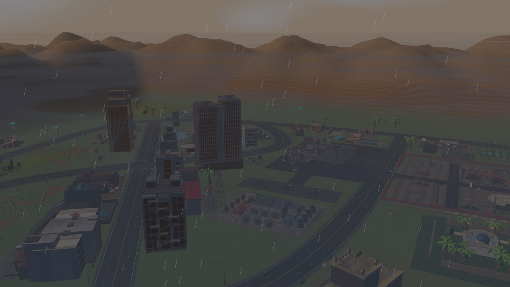
LiberateThe harbor city: cranes, container rows and a garrison dug in among the blocks.
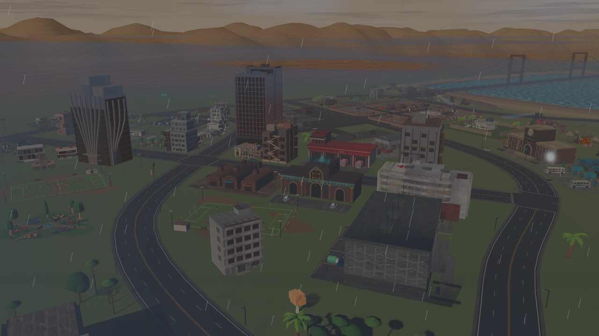
LiberateThe farm-belt town feeding both armies. Whoever holds it eats.
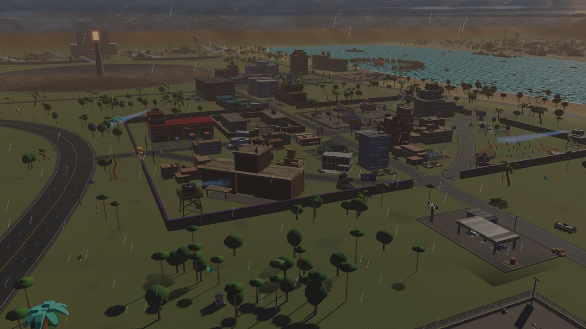
LiberateThe prison across the bay. The men inside have waited since the mutiny, and they know how to work a forge.
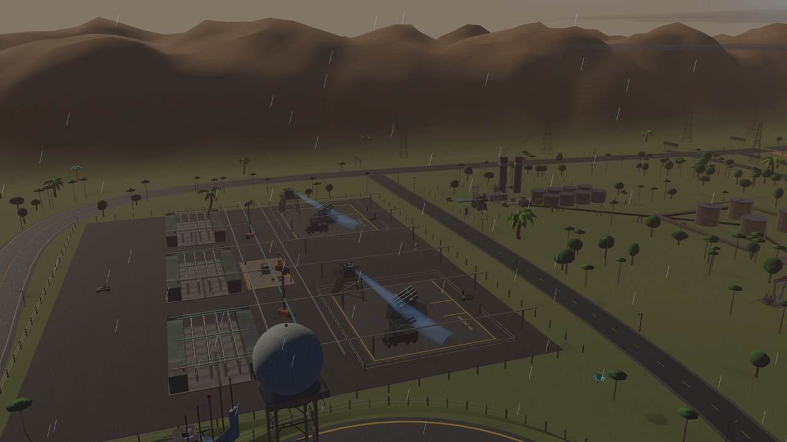
RecoverThe regime enriched it. You deliver it, gently, to ONAT, without turning the coast to glass.
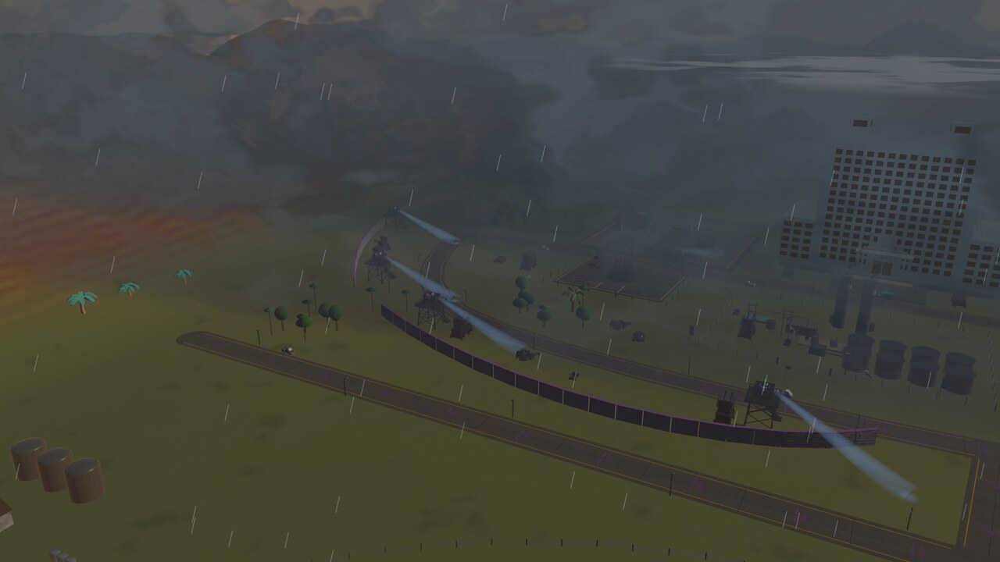
DestroyThe Marshal's fortress on the far shore. The strait opens over its rubble.
The Khoshki Bar dries at the ebb and armies walk it. RA'D-O-BARQ rolls in off the gulf and surges it back under.
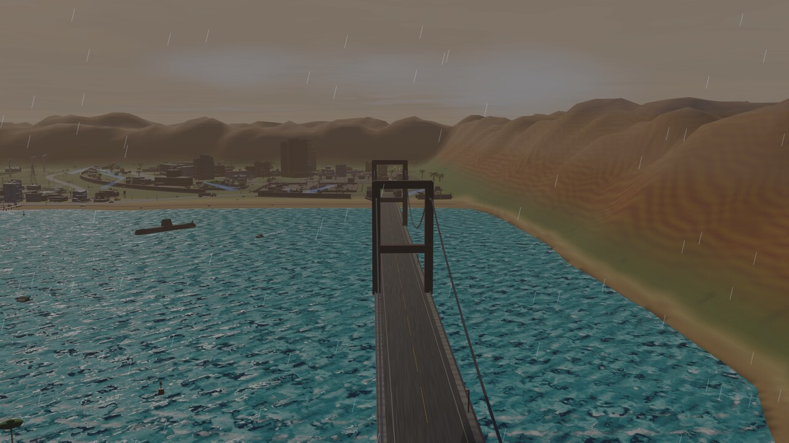
The causewayThe one causeway. Every army that wants the far shore queues for it, and it can be destroyed once, forever.
 Weather
WeatherRain streaks past the bridge cables and rings the open water of the strait.
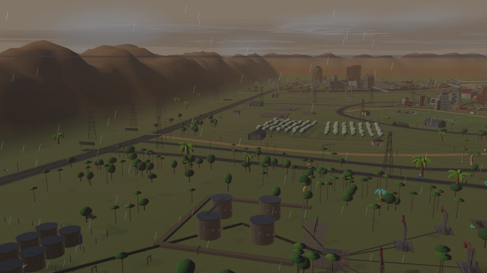
Oil, againThe west shore runs on the refinery. Everything in it is full, and everything in it burns.
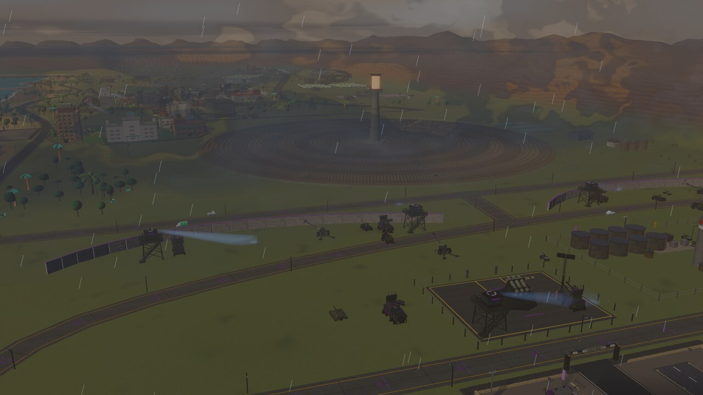
The stormA slate shelf front, hanging rain shafts and lightning, and a storm surge that rewrites the shoreline while it lasts.